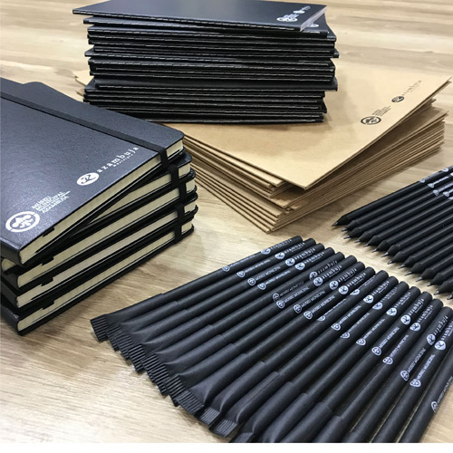
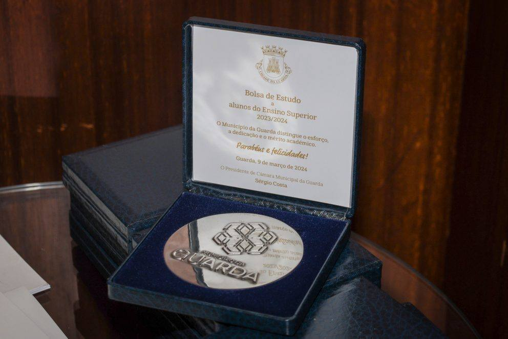
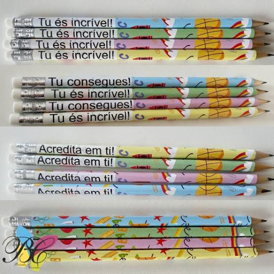
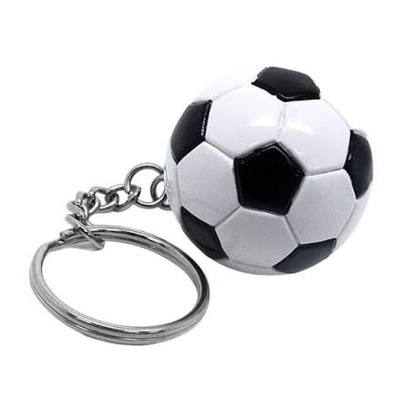
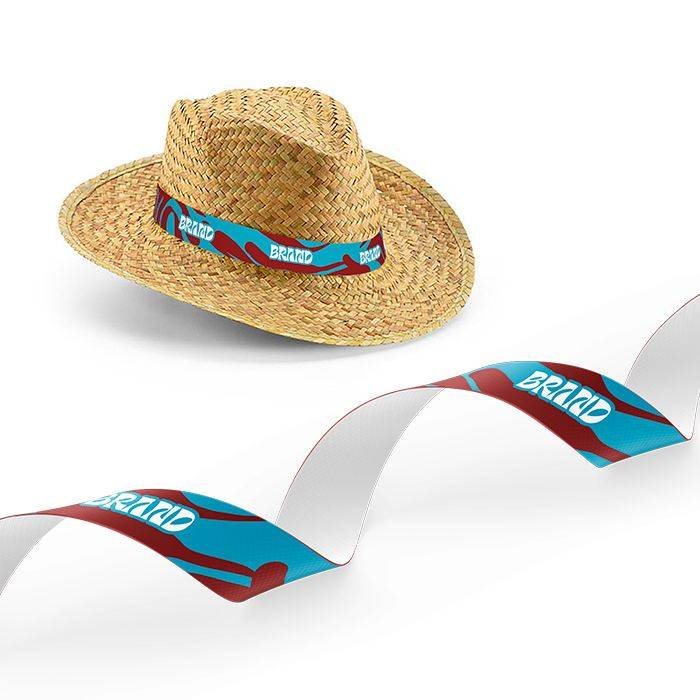
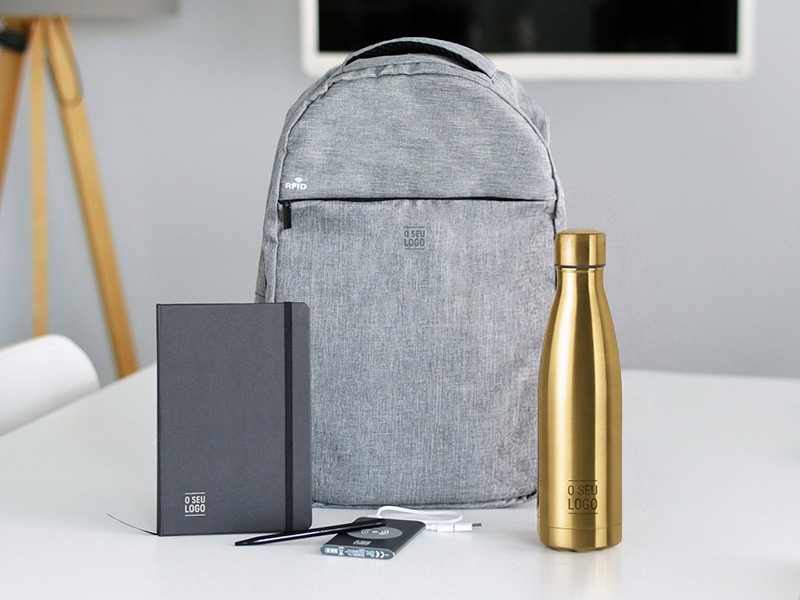
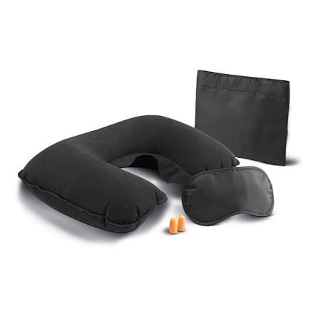
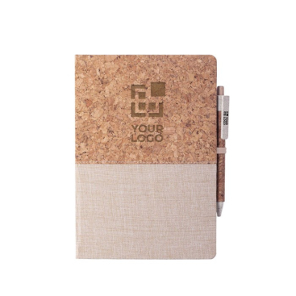
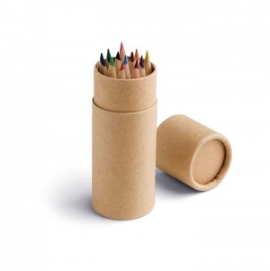
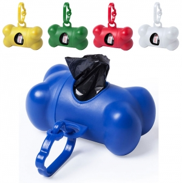

Guia de contexto
Empresas
Ideias para acolhimento de equipas, reuniões, formação, visitas e encontros de trabalho.
Explorar: EmpresasGuias para relacionar destinatários, ocasiões, locais e épocas com famílias de artigos que podem ser avaliadas. As propostas são editoriais e não substituem a confirmação das necessidades concretas.

Ideias para acolhimento de equipas, reuniões, formação, visitas e encontros de trabalho.
Explorar: Empresas
Ideias para iniciativas culturais e desportivas, feiras locais, informação pública e receção de visitantes.
Explorar: Câmaras municipais
Ideias para alunos, docentes, famílias e equipas escolares, ajustadas à idade e à atividade concreta.
Explorar: Escolas
Ideias para atletas, voluntários, participantes e adeptos, sem confundir lembranças com equipamento técnico.
Explorar: Clubes desportivos
Um método para transformar o contexto do destinatário em perguntas e comparações claras, sem pressupostos comerciais.
Explorar: Revendedores
Ideias para congressos, conferências, feiras, festivais e eventos desportivos, pensadas ao longo do percurso de participação.
Explorar: Eventos
Ideias para acolhimento de hóspedes, visitas guiadas, programas culturais e eventos em alojamentos.
Explorar: Turismo e alojamento
Ideias para integrar e reconhecer voluntários e apoiar campanhas, iniciativas culturais e atividades comunitárias.
Explorar: Associações e organizações comunitárias
Relacione idade, atividade e acompanhamento com artigos de desenho, escrita, jogos, transporte e vestuário. A escolha começa pela criança e pelo contexto de utilização.
Explorar: Crianças
Diferencie agricultores, cooperativas, equipas, participantes de feiras e visitantes. Os artigos de comunicação podem apoiar uma ocasião sem substituir ferramentas ou proteção no trabalho.
Explorar: Agricultura
Escolha para tutores, equipas, instituições e eventos, separando materiais destinados às pessoas de acessórios utilizados diretamente por animais.
Explorar: Animais